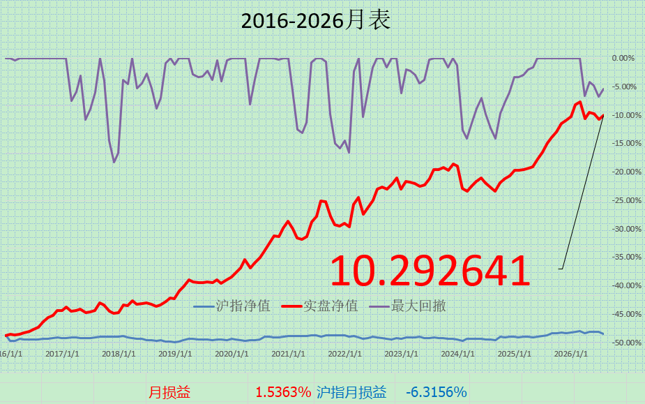

总算暂时回正了。上半年没有大仓位主观参与科技，但积极进行了学习，参与与否的方式、理由都在过往的简叙里说过了。没有经历巨大波动，也没有乱整。但市场有市场的问题，我有我自己的问题，虽然没有致命错误，但也有一些局部错误。上半年的行情就像是照妖镜，照出了去年被beta遮盖的问题。经过从5月肝到7月中旬，把所有策略和资管全套系统肝了一遍，期待后面保持稳健上行。不管后市偏向多/空，偏向价值/成长。都好好做自己能做的。欢迎随时交流。
更新时间：2026年07月31日 15:17

